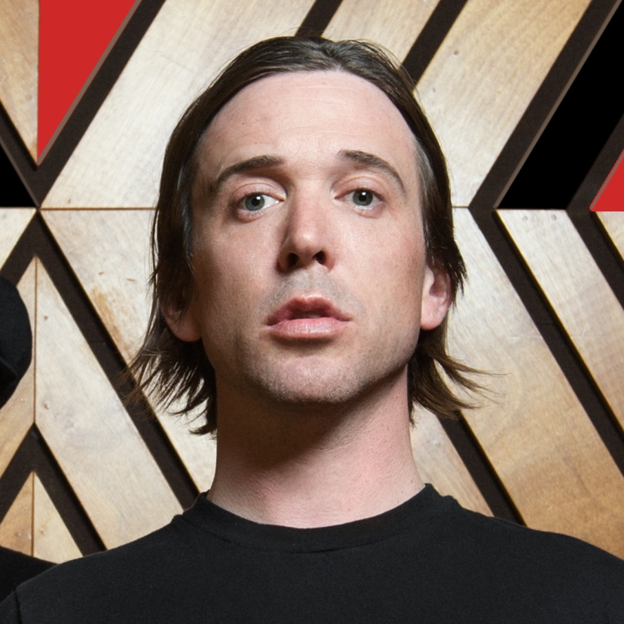

MEMBRES DU GROUPE

Benjamin Kowalewicz
Chanteur
Benjamin Kowalewicz est un chanteur de rock canadien né le 16 décembre 1975 à Montréal.
Autrefois batteur dans un groupe précédant, il est maintenant le chanteur du groupe Billy Talent.
Ian D'Sa
Guitariste principal
D'origine indienne (Goa), né en Angleterre le 30 octobre 1975, Ian a grandi en Ontario.
Ayant appris la guitare à 13 ans, il est maintenant le guitariste principal de Billy Talent.
Jon Gallant
Bassiste
Jonathan Gallant (né le 23 juillet 19751) est le bassiste du groupe Billy Talent. Jon a grandi à Streetsville, Ontario.
Il a commencé à jouer de la guitare basse à douze ans.
Aaron Solowoniuk
Batteur
Aaron Solowoniuk, d'ascendance polonaise, est né le 21 novembre 1974 et a grandi à Streetsville, Ontario.
Il est le batteur de Billy Talent.
Jordan Hastings
Batteur secondaire
Jordan "Ratbeard" Hastings (né le 15 mars 1982) est un musicien canadien né à Hamilton, en Ontario.
En janvier 2016, Hastings a commencé à remplacer Aaron Solowoniuk dans le groupe Billy Talent, après que Solowoniuk eut une rechute de sclérose en plaques.
Il a enregistré la batterie pour leur dernier album Afraid of Heights, sorti en juillet 2016.